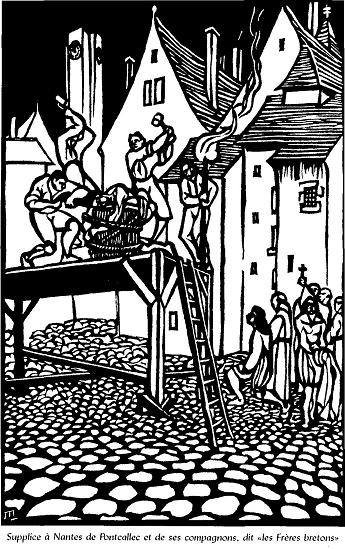
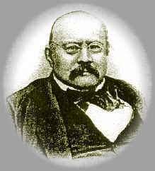
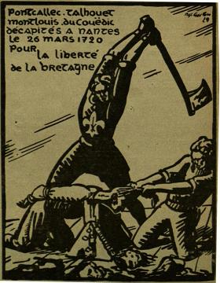
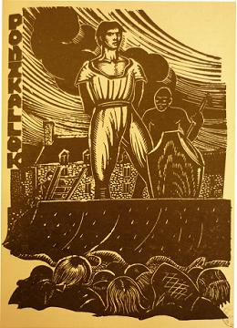
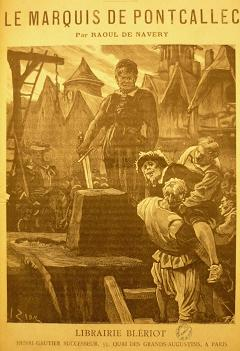
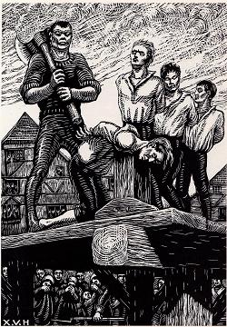
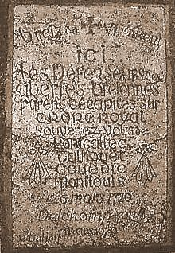

La Mort de Pontcallec
The Death of Pontcallec
Dialecte de Cornouaille
|
Avant la publication en ligne du 2ème carnet de Keransquer en novembre 2018, on pouvait croire ce qu'écrivait le fils de La Villemarqué, Pierre, dans la biographie de son père qu'il publia tout d'abord en 1908, "La Villemarqué sa vie et ses oeuvres", p.66 de l'édition de 1926 (note de bas de page): ( 1) "Contrefaçon évidente de la ''Mort du marquis de Pontcalec', chantée par une chanteuse ambulante qui avait probabllement mêlé deux chants ensemble, sans comprendre elle-même ce qu'elle chantait." En se rapportant au 2ème carnet p.158-164, on se rend compte que "Marquis de Pont-calech et M. de Pontquer"' doit se lire "Marquis de Pontcallec" et " Madame de Pontquer" et qu'on a affaire à 2 chants distincts et non à une "contrefaçon" ou à un mélange involontaire comme l'affirme Pierre de La Villemarqué. Madame de Ponker est un autre chant, noté en 1843 dans le second carnet manuscrit. L'auteur de cette gwerz pensait certainement à la famille issue de Charles de Guer dont la châtellenie de Pont-Calleck fut érigée en marquisat en 1657 et resta en sa possession jusqu'en 1790. Le membre le plus illustre en est Clément Chrysogone exécuté en 1720, le héros de la prèsente élégie. Ce pourrait être cette même Annette Le Moine qui enseigna à La Villemarqué l' "Elégie de Pontcallec" qui encadre l'autre chant: - l'élégie commence page 158 / 87,et se poursuit sur les 2 pages suivantes. - page 161 / 92 débute, le 2ème chant, signalé par un nouveau titre, "An Itron Ponker" (Mme de Pontquer) qui occupe les pages 161 à 164 (moitié supérieure de la feuille); - page 164, un trait marque la fin de ce 2ème chant, suivi de 8 vers qui constituent la fin de l'Elégie. Cependant, du fait que la moitié de ces vers comprennent de nombreuses ratures et surcharges, on peut douter qu'il s'agisse de la dernière partie du chant noté au vol et voir dans cet ajout une création du collecteur. En revanche, page 6 de la table B, le chant intitulé "Aussi riche que le Marquis du Pontcalec" deviendra dans le Barzhaz la "Croix du chemin" . Comme on l'a dit, depuis novembre 2018, ce document a été mis en ligne. Nous avons reproduit sur la page bretonne du présent chant une transcription KLT de ces trois extraits avec des commentaires, à la lumière desquels il convient de lire le texte ci-après, resté inchangé. On a seulement fait ressortir en gras , dans les traductions ci-dessous, les passages sans équivalent dans le manuscrit, que l'on peut supposer inventés par le collecteur ( ajouts ) ou les modifications par rapport à ses trois modèles. On a mis en italiques le passage emprunté au récit de Fañch Plassard et les strophes 61-63 et 65, issues de la page 164, dont l'origine est douteuse. - Sous forme manuscrite: . par Lédan: 512, "Markiz er Pontkelleg". - Dans des recueils: . par Monjarret dans "Tonioù Breiz Izel", p.146: "Maro Pontkalleg". . par Y-B. Piriou dans "De Bretagne et d'ailleurs", p.152-153 (*) et sur CD pl.17: "Gwerz Pontkalleg". - Publié dans des périodiques: . par J. Le Digabel, dans "Revue Morbihannaise, tome 1" pp. 345-352, 1891-1892: "Marü er Marquis a Bontcallec" (chanté par l'abbé Jean-Mathurin Cadic). . par Joseph Loth, dans "Annales de Bretagne" pp.480-487, 1893, "La chanson du Marquis de Pontcalec". . par Anatole Le Braz, dans "Revue celtique" pp.270-275, 1896: "Gwerz Pontkallec" (et dans archives du CRBC) . par le collaborateur J.H. de la revue "Dihunamb", collecté près de Guéméné , pp. 285-287, 1905: "Gwerzen Markiz er Pontkelleg". . par l'abbé François Cadic, dans "Paroisse Bretonne de Paris", mars 1907: "Le marquis de Pontcallec". . par Yves Le Diberder dans la revue Brittia, en 1913, pp. 331-332. - Sous forme d'enregistrement: . par le Centre de Recherche Bretonne et Celtique (CRBC): multiples enregistrements (Donatien Laurent, Eva Guillorel...):"Gwerz Markiz Pontkalleg". . par l'association Dastum (fonds Monat, Belz, Mazeas...): "Markiz ar Pontkalleg" . par Radio Bro Güened, Fonds Le Boulc'h: "Markiz ar Pontkalleg". Pourtant, selon Luzel et Joseph Loth, cités (P. 389 de son "La Villemarqué") par Francis Gourvil qui se range à leur avis, ce chant historique fait partie de la catégorie des chants inventés . C'est vraisemblable pour ce qui concerne l'équivalent de 24 strophes sur 64, soit 38% du texte! (*) M. Piriou note l'absence de "Pontcallec" dans les "Gwerzioù" de Luzel, alors qu'il a collecté sa version dans une ferme voisine de la ferme natale de celui-ci. S'agissait-il d'un parti-pris idéologique de la part d'un républicain convaincu?
|
|
Before the online publication of Keransquer notebook N° 2 in November 2018, one could believe what La Villemarqué's son Pierre wrote in his father's Biography, which he first published in 1908, "La Villemarqué, sa vie et ses oeuvres ", on p.66 of the 1926 edition (footnote): (1) "Obviously an imitation of the '' Death of the marquis of Pontcalec ', sung by a itinerant singer who had probably mixed two songs together, without understanding what she sang." By referring to the second Notebook, p.158-164, we realize that "Marquis de Pont-calech et M. de Pontquer" 'must read "Marquis de Pontcallec" and " Madame de Pontquer", that these are 2 distinct songs and not an "imitation" or an involuntary mixture as asserted by Pierre de La Villemarqué. Madame de Ponker is another song, noted in 1843 in the second handwritten Notebook. Whoever composed this gwerz certainly thought of the Charles de Guer 's family whose castle and estate Pont-Calleck were erected as a marquisate in 1657 and remained in their possession until 1790. The most illustrious member thereof is Clément Chrysogone executed in 1720, the hero of the present elegy. It could be this same Annette Le Moine who taught La Villemarqué the "Elegy of Pontcallec" into which "Ponker" is inserted: - the Elegy begins on page 158 / 87, and continues on the next 2 pages. - on page 161 / 92 the second song begins, signaled by a new title, "An Itron Ponker" (Mme de Pontquer) which occupies pages 161 to 164 (upper half of the sheet); - on page 164, a line marks the end of this 2nd song, followed by 8 lines which constitute the end of the Elegy. However, due to the fact that half of these verses include numerous erasures and overloads, we may doubt that this is the last part of the genuine previous song and see in this addition a creation by the collector. But, on page 6 of Table B, the song titled "As rich as Marquess Pontcalec" is included in the Barzhaz as "The cross by the wayside" . As already stated, since November 2018, an online copy of this document has been posted. You will find on the Breton page for the present ballad a KLT transcript of these three excerpts with commentaries, in the light of which the -unchanged- following text should be read. In the below translations, passages whith no equivalent in the manuscript, which may be supposed to have been invented by the collector ( additions ) or changes in comparison to his three models, have been highlighted in bold , while the passages borrowed from the story of Fañch Plassard , as well as the dubious stanzas 61-63 and 65 copied from page 164, have been italicized . - In handwritten form: . by Lédan: 512, "Markiz er Pontkelleg". - In collections: . by Monjarret in "Tonioù Breiz Izel", p.146: "Maro Pontkalleg". . by Y-B. Piriou in "From Brittany and elsewhere", p.152-153 (*) and on CD, track 17: "Gwerz Pontkalleg". - Published in periodicals: . by J. Le Digabel, in "Revue Morbihannaise, tome 1" pp. 345-352, 1891-1892: "Marü er Marquis a Bontcallec" (sung by the Reverend Jean-Mathurin Cadic). . by Joseph Loth, in "Annales de Bretagne" pp.480-487, 1893, "The dirge of Marquis de Pontcalec". . by Anatole Le Braz, in "Revue celtique" pp.270-275, 1896: "Gwerz Pontkallec" (and in archives of CRBC) . by J.H., collected near Guéméné, in "Dihunamb", pp. 285-287, 1905: "Gwerzen Markiz er Pontkelleg". . by the Reverend François Cadic, in "Paroisse Bretonne de Paris", March 1907: "Le marquis de Pontcallec". . by Yves Le Diberder in the periodical Brittia, in 1913, pp.331-332. - As tape or CD recordings: . by the Centre de Recherche Bretonne et Celtique (CRBC): many records (Donatien Laurent, Eva Guillorel...): all titled "Gwerz Markiz Pontkalleg". . by the Dastum Association (collections Monat, Belz, Mazeas...): "Markiz ar Pontkalleg" . by Radio Bro Güened, Collection Le Boulc'h: "Markiz ar Pontkalleg". And yet, according to Luzel and Joseph Loth, quoted by Francis Gourvil (p. 389 of his "La Villemarqué"), this historical song was " invented " by its alleged collector. This could really apply to some 24 stanzas, tantamount to 38 percent of the whole text! (*) M. Piriou remarks that Luzel's "Gwerzioù" include no Pontcallec lament, though he has collected his own version in a farmstead adjoining the house where Luzel was born. Did the convinced Republican Luzel omit it on purpose, in accordance with his political creed? |
Mélodie - Tune 1
Mélodie - Tune 2
Mélodie - Tune 3
Vous entendez la mélodie 1 dans le mode dorien, la plus connue.
Il existe une mélodie 2, en ré mineur, 12/8. C'est celle qui accompagne le texte breton (cliquer sur le drapeau en bas de page).
La 3ème mélodie est donnée par l'Abbé Cadic
You are listening to tune 1 in Dorian mode, which is the more popular tune.
Tune 2 in D minor, 12/8 is the background to the Breton version (click on flag below).
The 3rd tune was published by the Rev. Cadic.
| Français | ******** | English |
|---|---|---|
|
I
1. Amis, déplorez tous avec - Malédiction au traître! Moi, le destin de Pont-Calleck. - O, toi qui l'as trahi, sois maudit! Malédiction au traître! 2. Pont-Calleck, ce jeune marquis Si beau, si courageux aussi ! 3. Il était l'ami des Bretons Appartenant à leur nation. 4. Au milieu d'eux il était né C'est chez eux qu'il fut élevé. 5. Aux Bretons allait son amour, A tous, mais non aux gens des bourgs. 6. Aux gens des bourgs et des cités Qui sont du parti des Français. 7. S' en prenant , l'engeance méchante, A ceux qui n'ont ni biens, ni rentes. 8. Aux pauvres qui n'ont que leurs bras Pour garder les leurs du trépas. 9. Pont-Calleck avait le projet D'alléger un peu notre faix. 10. Les citadins pris de dépit Ont sitôt mis sa tête à prix. 11. Seigneur Marquis, à ta cachette! Sinon tu cours droit à ta perte! II 12. Voilà longtemps qu'il est perdu; Que nul ne le trouvera plus. 13. C'est un gueux de la ville qui Mendiait sa pitance a trahi; 14. (Car aucun paysan ne l'eût Fait même pour cinq cents écus .) 15. A Notre-Dame des moissons, On nous envoya les dragons: 16.- Je voudrais savoir, dragons, si L'on est en quête du marquis; 17.- Oui, nous le cherchons; Pourrais-tu Nous dire comme il est vêtu ? 18.- Comme les paysans d'ici: Drap bleu semé de broderies ; 19. Sa veste est bleue, son pourpoint blanc ; Guêtres de cuir, bragoù bouffants; 20. Un chapeau de paille à ruban Et de longs cheveux noirs flottants. 21. A ses côtés deux pistolets Espagnols, à deux coups, tout prêts. 22. Des habits comme on voit partout . Il en a de dorés dessous. 23. Et si vous me donnez trois louis Je vous mènerai droit à lui. 24.- Pas même trois sous tu n'auras. Des coups d'épée, je ne dis pas. 25. Pas un sou, pas même un kopek. Mais mène-nous à Pont-Callec! 26.- Pitié, dragons, au nom de Dieu, Ne me faites point mal, messieurs! 27. Ne me faites point de mal! Grâce! Je vais vous mettre sur ses traces : 28. Je crois bien qu'il dîne à l'école Avec le recteur de Lignole. III 29. Seigneur marquis, fuyez ! fuyez ! Car les dragons vont arriver ! 30. Les dragons ont cerné la place: Tuniques rouges et cuirasses . 31. - Un dragon jamais n'osera Venir porter la main sur moi. 32. Aux dragons l'usage interdit Les voies de fait sur les marquis. - 33. A peine a-t-il dit que voilà La porte qui vole en éclats . 34. Lui de saisir ses pistolets: - N'approchez pas, je vais tirer ! - 35. Voyant cela, le vieux recteur Se jette aux genoux du seigneur: 36. - Par le Christ, je vous en supplie, Ne tirez pas, je vous en prie! - 37. Entendant invoquer Celui Qui pour nous patiemment souffrit, 38. Le nom de notre doux Sauveur, Il ne put retenir ses pleurs; 39. Il maîtrisa son émotion, Puis se dressa, criant: " Partons !" 40. Quand par Lignol on l'a mené, Les pauvres paysans disaient: 41. - Ces procédés sont inouïs: Voilà qu'on garrotte un marquis! - 42. Comme il passait près de Berné , Survint un groupe d'écoliers: 43. - Monsieur le Marquis, le bonjour: Nous allons à l'école au bourg. 44. - Adieu, chers petits écoliers, Je ne vous verrai plus jamais! 45. - Mais où donc allez-vous, Seigneur? Que vous ne rentriez ? Un malheur? 46.- Je n'en sais rien, Dieu seul le sait: Je sais que je cours un danger. - 47. Il eût voulu les caresser, Mais ses bras étaient enchaînés. 48. Un spectacle à faire pitié! Les dragons eux-mêmes pleuraient. 49. Pourtant ils ont, on le devine Des cœurs de pierre en leur poitrine. 50. A Nantes il fut déféré, Il fut jugé, puis condamné. 51. Non point par ses pairs, comme il eût Fallu, mais par des parvenus. 52. Lesquels à Pont-Calleck ont dit: - Qu'avez-vous fait, Seigneur marquis? 53. - J'ai fait mon devoir. Sans vergogne, Vous, vous ferez votre besogne ! - IV 54. Ce jour de Pâques, à Berné Un messager est arrivé. 55.- Salut à vous, gens du pays. Le recteur est-il par ici? 56.- Il dit la messe. Allez-y donc Et il doit en être au sermon. - 57. Comme il montait en chaire, on lui A glissé dans son livre un pli: 58. Mais c'est à peine s'il pouvait La lire, tant ses yeux pleuraient. 59.- Quel est donc ce nouveau malheur Quelle est la cause de vos pleurs? 60.- Ah, si je pleure, mes enfants, Vous allez pleurer tout autant: 61. Celui qui nous comblait de biens: Nourriture, habits et soutien; 62. Et qui, comme moi, chérissait Les pauvres du bourg de Berné, 63. Il est mort, aimant son pays, L'aimant jusqu'à mourir pour lui. 64. A vingt-deux ans, il dut mourir! Ainsi meurent saints et martyrs. 65. Ayez pitié de lui, Seigneur! La Marquis est mort! Ma voix meurt! -O toi qui l'as trahi, sois maudit ! Malédiction au traître ! Trad. Chr. Souchon (c) 2012 |
Le point de vue de La Villemarqué"Les fils de ces hommes qui au seizième siècle prirent les armes pour affranchir leur pays de la souveraineté étrangère devaient, au dix-huitième, se lever deux fois pour la même cause. La conspiration de Cellamare eut un plus grand caractère de simplicité dans ses motifs et de précision dans son objet que la Ligue; elle fut purement nationale . Se fondant sur la violation de leurs franchises par le Régent, dont le but était de détruire toute résistance parlementaire [1], les Bretons déclarèrent nul 1'acte de leur union à la France, et envoyèrent au roi d'Espagne, Philippe V, des plénipotentiaires chargés d'entamer des négociations ayant pour base l'indépendance absolue de la Bretagne. La plus grande partie de la noblesse [2] et les populations rurales [3] se liguèrent contre la France ; la bourgeoisie [4] seule resta en dehors du mouvement national. Elle était, dit M. Rio [dans "Histoire d'un collège breton sous l'Empire", p.19], entièrement dévouée au Régent et déjà presque toute étrangère au pays; les mots de droit et de liberté n'étaient inscrits que sur le gonfanon des gentilshommes [5]. La conspiration échoua, comme on sait. Quatre des principaux chefs, savoir : Pontcallec, du Couedic, Montlouis et Talhouet-le-Moine, furent pris et traités avec le plus dur mépris des formes judiciaires; le Régent, désespérant d'obtenir un arrêt de mort de leurs juges naturels [6], les livra à une cour martiale; un étranger, un Savoyard [7], la présidait. Mais le peuple, indigné, réforma le jugement, et il fallut toutes les horreurs de 93 pour faire oublier aux Bretons les tribunaux extraordinaires et les dragonnades de 1720. L'élégie de Clément de Guer-Malestroit, marquis de Pontcallec, décapité à Nantes, à l'âge de vingt et un ans, sur la place du Bouffay, avec les trois braves gentilshommes que nous avons nommés, témoigne de l'esprit de la conjuration et de la sympathie populaire qui adoucit leurs derniers instants." Quelques extraits des "Notes" "Pontcallec descendait en ligne directe de ce fier Jean de Malestroit, chef de l'opposition à 1'union de la Bretagne a la France, qui refusa le bâton de maréchal que la duchesse Anne lui offrit, pour vaincre une obstination qu'elle admirait tout en la blâmant..." "La lettre où l'on apprenait au recteur de Berné la mort du jeune Breton...a été conservée; elle est écrite par un des religieux qui assistèrent les condamnés [ le père carme Nicolas ]. Même au moment de l'exécution, l'humeur enjouée du marquis ne se démentit pas un instant... « Après avoir confessé M. du Couëdic, dit le religieux, je me retirai en le saluant. Voulant me rendre le salut : «Où est, dit-il, mon chapeau ? - Hé! qu'avons-nous besoin de chapeaux ? répondit M. de Pontcalec, on nous ôtera bientôt le moule des chapeaux !» «Comme nous allions vers le Bouffay, continue le moine, les gémissements et les cris du peuple me donnèrent occasion de lui dire : "On plaint votre sort, et on ne plaignit pas celui de Jésus-Christ. - Ah! quelle différence entre lui et moi ! " "...Le tour de Pontcallec étant venu, il dit à son confesseur: « Je pardonne de bon cœur à tous ceux qui me font mourir. » Puis il ajouta en souriant: « Voila un compliment bien triste » En penchant la tête sur le billot latal, il répéta plusieurs fois : "Cor contritum et humiliatum, Deus, non despicies". Je l'entendis aussi, continue le religieux, prononcer à haute voix "Jesus, Maria". Ses dernières paroles furent celle-ci : « Mon Dieu, je remets mon âme entre vos mains! » Suit une description de l'enterrement discret des quatre suppliciés selon un cérémonial que le Régent avait lui-même réglé "dans la crainte d'un soulèvement". [1] En 1715 les Etats de Bretagne refusent d'accorder de nouveaux crédits au pouvoir royal ruiné par les fastes et les guerres de Louis XIV. Leurs émissaires auprès du Régent rendent visite, à Sceaux, à son rival, le Duc du Maine. Convoqués à Dinan en Juin 1718, l'attitude des Etats est telle que 73 délégués sont exilés. Celle du Parlement , jaloux de ses prérogatives, n'est pas plus conciliante: il refuse d'enregistrer les édits de perception des impôts, en 1717, et va même jusqu'à interdire la levée de nouveaux droits sur les alcools en juillet 1718 et à voter des remontrances. [2] Faisant suite à l'arrivée à Rennes du nouveau gouverneur de la Bretagne, le maréchal de Montesquiou , avec mission de lever les impôts par la force, 60 gentilshommes réunis à Rennes signèrent un "acte d'union" le 15 septembre 1718. Une vingtaine seulement de membres de l'aristocratie terrienne bretonne prirent une part active à ce qu'un article de Louis de Carné, en 1832, puis l'ouvrage de La Borderie de 1857 appellent "la conspiration de Pontcallec", même si l'âme en était de Talhouet. Ils étaient d'ailleurs prompts au revirement. L'un d'entre eux, arrêté à Nantes en septembre 1719, dévoila à Montesquiou, ce qui se tramait avec les Espagnols (débarquement de 300 hommes à Rhuys puis de 2 autres frégates qui font vite demi-tour). Les autres nobles furent chassés du château de Pontcallec où ils s'étaient réfugiés. La haute aristocratie bretonne resta en dehors du mouvement. [3] Des troubles éclatèrent effectivement un peu partout en Bretagne: une émeute provoquée par le prix du pain à Lamballe en mai 1719; une autre contre les agents du fisc à Vitré en juillet; d'autres encore au Croisic, à Blain et à la Roche-Bernard. Sinon, le peuple fut quasiment absent du mouvement conspiratif. [4] Le mot que La Villemarqué traduit par "bourgeois" (strophes 5 et 6), "bourc'hiz" signifie "citadin", plutôt que "bourgeois". C'est ce que confirment les strophes 13 et 14. Le traître est un mendiant des villes, non un bourgeois (non plus qu'un paysan). Il semble que l'arrestation de Pontcallec, le 28 décembre 1718, doive être surtout mise sur le compte d'un officier de police, le sénéchal du Faouet, Chemendy qui trahit la confiance du Marquis. Elle eut effectivement lieu chez le recteur de Lignol (12 km à l'est de Berné) [5] Particulièrement lors de la tenue des Etats à Dinan (juillet 1718), il apparut qu'ils étaient dominés par une petite noblesse désargentée propre à la Bretagne, dite "noblesse dormante", qui rêvait d'une République aristocratique . [6] Le Parlement de Rennes. Pour juger les conjurés une chambre royale fut constituée à Nantes le 3 octobre 1719. Présidée par Castanes, elle siégea du 12 au 26 mars 1720. L'opinion publique s'attendait à une grâce pour ce complot d'opérette. Pourtant la cour prononça 20 condamnations à mort, dont 16 par contumace qui furent commuées par la suite. [7] En 1839 la Savoie n'était pas française. Elle ne le deviendra qu'en 1860!  La Villemarqué's opinion"The sons of the men who, in the 16th century, took arms to free their country from foreign rule, were to rise twice in the 18th century in defence of the same cause. The motives of the Cellamare conspiracy were simpler and its aims more precise than those of the League. They were solely national . Putting forward the violation of their franchises by the Regent who was bent on breaking their Parliament's resistance [1], the Bretons declared null and void the [1532] Act uniting them with France and sent to the King of Spain, Philip V, plenipotentiaries to start negotiations on the basis of a fully independent Brittany. Most of the gentry [2] and peasantry [3] joined them in their combat against the French government . Only the middle class [4] kept clear off this national movement. They were, so writes M. Rio [in "History of a Breton high school under Napoléon", p. 19], totally devoted to the Regent and already utterly extraneous to their motherland. Only on the banner of the nobility [5] were the words "right" and "liberty" inscribed. The plot was a failure, as we know. Four of the main leaders, to wit, Pontcallec, du Couedic, Montlouis and Talhouet-le-Moine, were rounded up and treated in defiance of the legal proceedings. The Regent who had lost hope of making their natural judges [6] sentence them to death, convened a martial court: a foreigner from Savoy [7] presided over it. But the indignant people reversed [in their songs] the sentence passed. Only the atrocities of 1793 could outdo, in the Bretons' memories, the extraordinary courts and "dragonnades" of 1720. The lament for Clément de Guer-Malestroit, marquess Pontcallec, who was beheaded in Nantes, aged only twenty one, on the Place du Bouffay, with the three aforementioned gallant noblemen, gives evidence for the loyalty of the conspirators and the support they enjoyed among the people, which could not fail to assuage their last sufferings." A few excerpts from the "Notes" "Pontcallec was descended in direct line from the proud Jean de Malestroit, who was the leader of the party opposing the union of Brittany with France and refused the field marshal's stick offered him by Duchess Anne to break his obstinacy, which she both admired and condemned..." "The letter informing the vicar of Berné of the young Breton's death...was preserved; it is by the hand of one of the clerics who assisted the convicts [ White Friar Nicolas ]. Even in the minutes preceding his beheading the marquess' sense of humour was intact..."After I had heard M. du Couédic's confession, said the monk, I withdrew and greeted him. He wanted to requite my greeting: "Where is, so he said, my hat? - Why, so said M. de Pontcallec, do we need hats? Presently we'll be missing both our hats and their hat racks!" "As we were marching to the Bouffay square, went on the monk, the lamenting cries of the crowd prompted me to say: "They pity our fate but Jesus-Christ's fate was not pitied." He said: "What difference between Him and me!" "...Pontcallec's turn had come. He said to his confessor: "I sincerely pardon those who caused me to die." Then he added with a smile: "This is a melancholy sentence, isn't it!" When he laid his head on the block, he said repeatedly: "Cor contritum et humiliatum, Deus, non despicies". I also heard him say, adds the monk, in a loud voice, "Jesus, Maria". And his last words were: "My God, in your hands I entrust my soul!" Here follows a description of the sober interment of the four convicts, accorded to a ceremonial devised by the Regent himself "to prevent an uprising". [1] In 1715, the King's government that was left bankrupted by Louis XIV' s splendour and ceaseless warfare was denied new credits by the Estates of Brittany . Their emissaries, on their way to the Regent's residence, stopped at Sceaux to visit his rival, the Duke du Maine. When they were convened in Dinan, on June 1718, their reluctance caused 73 representatives to be exiled. As to Parliament , it was keen on preserving its prerogatives and not more conciliatory: it refused to pass the edict to allow the collection of taxes in 1717, prohibited that new duties be laid on liquors in July 1718, and went so far as to issue remonstrance. [2] Following the arrival in Rennes of the new Governor of Brittany, field marshal de Montesquiou , whose mission was to levy taxes by force, 60 noblemen gathered in Rennes where they agreed upon a "union act", on 15th September 1718. Only a score of members of the rural gentry took an active part in the so-called "Pontcallec conspiracy", thus dubbed by Louis de Carnet in an article dated 1832, then by La Borderie in 1857, though the plot was in fact led by Talhouet. Some of them were easily made to give up their cause: one was arrested in Nantes, in September 1719, and revealed to Montesquiou what was afoot (300 men landed at Rhuys, followed by 2 other frigates that immediately sailed back). The others were driven out of Pontcallec manor where they had taken refuge. The high nobility of Brittany did not partake in the rising. [3] There were troubles and disturbances all everywhere in Brittany: an uprising caused by the price of bread in Lamballe in may 179; another against the taxmen in Vitré in July; others in Croisic, Blain and La Roche-Bernard. But the country folks were practically not instrumental in the plot. [4] The word translated by La Villemarqué as "bourgeois" (stanzas 5 and 6), namely "bourc'hiz", means "town-dweller", rather than "belonging to the middle-class". It is confirmed by stanzas 13 and 14. The traitor is a town beggar, not a "bourgeois" (and, above all, not a "peasant"). Apparently the police officer, Seneschal Chemendy, a "friend" of Pontcallec's, is chiefly liable for the marquess' capture, that was really performed on 28th December 1818, at the house of Lignol's vicar (12 km east of Berné). [5] When the Estates were held in Dinan, in July 1718, it was evident that a class peculiar to Brittany, the penniless gentry, who dreamt of a Republic of aristocrats , held sway over them. [6] The Rennes Parliament. To try the conspirators, a Royal court was convened in Nantes, on 30th October 1719. It was presided over by Castanes and sat from 12th to 26th March 1720. Twenty sentences of death were passed, for 16 people, who were pardoned later on, in their absence. [7] In 1839 Savoy was not French (not until 1860!). En italiques str. 44-46 : récit de Fañch Plassard et strophes p. 164. Bold characters : with no direct equivalent in notebook 2 In italics , str. 44-16: Fañch Plassard's narrative and stanzas p.164. |
I
1. It's a new dirge, listen to me, - Traitor, be cursed forever! On Pont-Calleck, the young marquis - Traitor, be cursed, be cursed for ever! Traitor be cursed for ever! 2. On the young marquis Pont-Calleck Fair and keen on risking his neck! 3. He was friend to every Breton, Being himself a Breton scion. 4. He was born in Low Brittany. He was raised in their company. 5. Was a friend to all on these grounds To all, except those in the towns 6. Except all those in the city Who take sides with the French party, 7. Who always see how they could harm Those who have nothing but their arms 8. But their arms' strength, every morning, To prevent their kids from starving. 9. Thus he had put into his head, The load off our shoulders to shed. 10. Arousing the town people's ire Who plotted the death of the squire. 11. Lord Marquis, flee and hide, be quick! To catch you they have found a trick! II 12. For months he's been out of the way. They won't find him, search as they may. 13. A beggar, a city poor man, Was the traitor who helped their plan. 14. Whoever lives far from the towns Would not have, for five hundred crowns . 15. Right on Saint Mary's Harvest day The dragoons came across his way. 16. - Tell me, Dragoons, please, do tell me, Are you in search of the Marquis? 17. - We are in search of him, that's true You know how he's clothed, don't you? 18. - Like all peasants in this parts: In blue cloth with embroidered hearts 19. Linen breeches, white waistcoat, Leather gaiters, and blue jacket. 20. A small straw hat with a red noose Black hair on his back hanging loose. 21. A girth with two guns on a chain, Two-shooters which were made in Spain. 22. His cloth above is rustic sheath , For he wears gold clothes underneath. 23. If you care to give me three pounds I'll tell you where he can be found. 24. - Even three farthings we won't give, But sabre strikes! D'you want to live? 25. Then, without getting one farthing, You shall tell us where he's hiding! 26. - O, My dear dragoons, for God's sake, Do not harm me, your swords don't shake! 27. Do not do me any harm, pray! I shall see you there right away! 28. He is yonder in the school hall, Dines with the parson of Lignol. - III 29. - O Lord Marquis, Away from here! I see the dragoons drawing near! 30. I see the dragoons, a whole horde With shimmering cuirass and drawn sword. 31. - I don't believe that it could be, That a dragoon laid hand on me. 32. For it would be quite a new tune: A marquis caught by a dragoon.- 33. And yet, he was still speaking when All the pack rushed in his den . 34. Now at them he pointed his gun: - Whoever stirs, his life is done!- 35. The old parson, who scorned to flee, Threw himself before the marquis: 36. - In the name of Christ, our Saviour, Do not shoot! No misbehaviour!- 37. When he heard our Saviour's name Who was put to treason and shame, 38. When these words sounded in his ears The lord could not hold in his tears . 39. They saw him first lower his head... "Let us go!" suddenly he said. 40. Through the streets of Lignol they went. The farmers expressed their dissent; 41. The Lignol folks were heard to claim: "They have tied the marquis, for shame!" 42. When they came near the town Berné , They passed schoolchildren on their way. 43. - Good day, Lord Marquis, we go down To have catechism in town. 44. - Good bye, children, I am in pain: We shall not meet ever again. 45. - Where do you go so hastily? Will you not be back presently? 46. God only knows, children: From hence My wretched life is held in suspense. 47. In kissing them there was no harm But they did not untie his arm. 48. Cruel would have been the heart who might Not have felt moved at this sight! 49. The dragoons were in great distress, Though they are known for their harshness. 50. Then he arrived in Nantes at last. He was tried. A sentence was passed. 51. He was condemned, not by his peers, But parvenus and profiteers. 52. They asked him and they meant no fun: - My Lord Marquis, what have you done? 53. - What I deemed worthy of doing! Now do you what is your calling! - IV 54. This year, on Easter First Sunday, A messenger came to Berné. 55. - Is the parson somewhere around? Where is the parson to be found? 56 - He's in church for Easter service, Going to preach at short notice.- 57. He was going up the pulpit With his book, when was laid in it 58. A letter he could hardly read Because of the tears that he shed. 59. - What mishap did occur again, Causing to our parson such pain? 60. - I'm crying because of a blow That will make you cry, as I know. 61. Poor, dead is the one who fed you, Who stood by you in weal and woe, 62. Dead is the one who has loved you, People of Berné, like I do. 63. Dead is the one who loved his land So much that he died at the hand 64. Of the headsman, - was twenty-two -, As only martyrs and saints do. 65. God, may he in Thy peace rejoice! Dead the Marquis! And dead my voice! - Traitor, be cursed forever, forever! Traitor, be cursed, forever! Transl. Chr. Souchon (c) 2012 |
(Version du Barzhaz dans le mode dorien)

|
La conspiration de Cellamare
Le marquis de Pontcallec, (soi-disant) né en 1698 à Berné, à 30 km au nord de Lorient, ainsi qu'une vingtaine de petits aristocrates bretons avaient, en 1718, inscrit leur action dans une conspiration, dite de Cellamare , d'après Antonio de Cellamare, l'ambassadeur d'Espagne à la cour de France. Elle visait à renverser le Régent et, en ce qui concerne les conjurés bretons, à obtenir, avec l'aide de l'Espagne l'indépendance de la Bretagne dont les franchises, proclamées dans le traité de 1532, étaient violées par le Régent. Ce fut un échec: la conspiration fut découverte par l'Abbé Dubois qui obtiendra de Philippe V, roi d'Espagne et petit-fils de Louis XIV, la révocation de son premier ministre, le cardinal Alberoni, l'auteur de ce complot. Il sera récompensé par la barrette de cardinal qui fit de lui un nouveau Mazarin ou Richelieu. Les plus élevés en titre des conjurés, le duc du Maine, un fils naturel de Louis XIV et son épouse, le prince de Conti, le cardinal de Polignac sont pardonnés. Mais, en guise d'avertissement à la noblesse, les 4 principaux chefs bretons de cette conjuration qui n'avait pas fait couler une seule goutte de sang, dont l'infortuné Pontcallec, furent décapités à Nantes sur la place du Bouffay, le 26 mars 1720. L'exécution publique fit l'objet d'une imposante mise en scène. Le message politique de la gwerz du Barzhaz  La complainte publiée par La Villemarqué et les commentaires qui l'accompagnent présentent Pontcallec comme un héros sacrificiel, voire christique . Transcendant les classes sociales, ce gentilhomme meurt pour avoir voulu défendre, outre les privilèges de sa propre caste menacés par les empiètements du pouvoir royal, le droit et la liberté en général, la Bretagne et ses paysans en particulier, après avoir été dénoncé par un mendiant à l'"ennemi français". Son engagement en avait fait l'adversaire des bourgeois qui avaient juré sa perte. Le petit peuple et le clergé rural déplorent sa disparition.L'"Argument" rédigé par La Villemarqué pour présenter "sa" Gwerz commente ces points. Il reste inchangé entre les éditions de 1845 et de 1867, de même que les "Notes" qui y font suite, si ce n'est que la référence finale à Walter Scott et Paul Féval est remplacée par une figure plus imposante: "Cette grande page d'histoire a été écrite d'une manière digne du sujet par M. Arthur de la Borderie ..." C'est une allusion à l'"Histoire de La Conspiration de Pontcallec", la première étude d'ampleur jamais écrite sur le sujet, que La Borderie, qui se revendiquait historien breton, a fait paraître dans la "Revue de Bretagne et de Vendée" en 1857-1859. La vision du personnage de Pontcallec y est conforme à celle qu'en donne la gwerz. En 1892 il publiera les archives du procès de 1720. Par le choix des pièces qu'il a publiées et les modifications qu'il y a introduites, ainsi que par les commentaires dont il les a assorties, La Villemarqué est considéré par beaucoup comme le plus fameux précurseur du nationalisme local breton et l'ouvrage de Bernard Tanguy, "Aux origines du nationalisme breton" lui consacre de longs chapitres. C'est particulièrement vrai de la présente gwerz. Le message idéologique structuré qui y est délivré dans les 10 premières strophes fut, effectivement, exploité par plusieurs historiens catholiques bretons qui s'y réfèrent: C'est dire combien il serait intéressant de savoir ce que ce message politique, inhabituel dans les gwerzioù en ce qu'il dépasse l'aire locale ou régionale, doit à la talentueuse imagination et aux convictions du collecteur. Une Gwerz morbihannaise  Tant que la gwerz du Barzhaz était la seule que l'on connût, il était tentant d'accuser le Barde de Nizon d'avoir instillé dans un chant traditionnel sans portée politique ses propres convictions. L'imposture serait de taille, compte tenu de la multitude et de la vigueur des mouvements intellectuels, artistiques et politiques que ce chant a inspirés jusqu'à nos jours. De La Borderie aux "Tri Yann", en passant par les graphistes des "Seiz Breur", tous se réclament, à des titres divers, du Pontcallec du Barzhaz.Mais à partir de 1892, de nombreuses autres versions de la gwerz sont publiées par les collecteurs. Elles tendraient à prouver, à première vue, que La Villemarqué n'est peut-être pas le faussaire qu'on l'a accusé d'être. C'est ainsi qu'il a pu s'inspirer d'une version collectée par un correspondant qui signe J.H. et publiée par la revue "Dihunamb" en 1905. Dans cette "Guerzen Markiz er Pontkelleg" , on retrouve l'essentiel du message aristocratico-libertaire et anti-français du chant du Barzhaz: Vient ensuite la trahison par un mendiant, l'arrestation du marquis (qui demande, ici, de récupérer ses habits de gentilhomme) et ses adieux aux gens du pays. Puis la sœur du marquis va à Nantes pour le sauver, mais, arrivant trop tard, elle s'écrit: " Français, n'oubliez pas ceci: / Entre les Français et les Bretons / Il y aura toujours le tête du Marquis..." Le recteur de Berné, s'adressant à ses paroissien leur dit: "- Le marquis a été mis à mort / Décapité à Nantes, / Décapité par les Français; / Pleurez tous, Bretons / Car vous avez perdu un bon maître / Vous n'en trouverez pas de semblable. / Et vous les pauvres déshérités / Avec les autres, pleurez aussi:/ Vous pouvez regretter le Marquis / Il ne viendra plus en aide à votre pauvreté. -" "Il n'avait pas fini de parler / Que tous s'étaient mis à pleurer./ Et ils criaient en s'en allant: / - "Malédiction rouge aux Français!" Le recteur reprend: "- Pardonnez!, Pardonnez aux Français / Comme il leur a lui-même pardonné./ Pardonnez, ne vous irritez pas! / Il est mort comme un saint. / Du haut du ciel, jusqu'à la fin du monde/ Il aimera encore les Bretons. / Il aimera toujours les Bretons/ Et les défendra contre les Français ". Mais tous continuaient à crier: / "Malédiction rouge aux Français!". Le point de vue de Francis Gourvil Raymond Lebègue ( Membre de l'Académie des inscriptions et belles-lettres, 1895-1984) dans son compte-rendu de l'ouvrage de Francis Gourvil sur "La Villemarqué et le Barzaz Breiz" (Le Journal des savants, 1960, N°3, p.119) écrivait: "Il est hors de doute qu'en 1839 et surtout en 1845 [La Villemarqué] a publié dans le Barzaz-Breiz des chants pseudo-historiques qu'il avait fabriqués et qu'il a imprégnés de « haine sauvage » et d'un sentiment antifrançais qu'on cherche en vain dans les authentiques chansons populaires ." S'agit-il d'une généralisation hâtive, au regard de ce qui précède? En l'occurrence, Francis Gourvil explique (p.472) que toutes les versions de la gwerz de Pontcallec qui, à l'instar du Barzhaz, mettent en avant des sentiments nationaux bretons ou témoignent d'une indéfectible affection portée à Pontcallec par ses vassaux seraient d'une authenticité discutable . Pour illustrer l'indifférence à l'égard du jeune marquis qui s'exprime dans les versions "authentiques" du chant, il cite celui publié par Joseph Loth dans les "Annales de Bretagne (t.VIII, pp.480 et suiv.) dont le refrain s'accorde assez mal avec un véritable chant funèbre: "Berger tombeau/ Tourne ta meule oh gai moulin/O tu vas bien" . Mais les chanteurs bretonnants, avaient-ils une idée de la signification de ce galimatias français? Les autres gwerzioù sur Pontcallec Eva Guillorel , dans sa thèse de doctorat "La complainte et la plainte" (2008), a recensé 29 complaintes qui virent le jour principalement autour de Berné (Morbihan), la ville natale du Pontcallec, mais n'eurent pas la même postérité littéraire que celle du Barzhaz. La personnalité de Pontcallec dans les gwerzioù  Comme l'écrit Fañch Gourvil , dans son ouvrage sur "La Villemarqué et le Barzaz-Breiz" paru en 1959 (p.469):"Si je vais dans la basse-fosse / Il faudra que j'aie un lit-clos/ Et une jolie fille pour la nuit. / Mais une jolie fille de la campagne: / Je n'ai que faire d'une bourgeoise, [ou "citadine"- cf. infra] / Car pour blanche que soit leur tempe/ Sous leur chemise elles ne sont que galle" Le prévôt lui répond: "Je te choisirai une compagne/ Qui tient sur un plateau./ Elle a nom corde de chanvre/ Et nouera ses bras autour de ton cou." En réalité, ce passage ne vise pas expressément Pontcallec, car il est emprunté à une autre gwerz, celle du "Clerc Le Chevans" ou "Le Chiffrans" recueillie par Penguern en Trégor et par le Chanoine Pérennès dans les Montagnes Noires. Luzel a également collecté une version de ce chant, mais elle ne contient pas le texte en question. - "gwellañ den a oa er bed" (le meilleur homme qui fut au monde - M. Donatien Laurent cite une version où "gwellañ" est remplacé par "fallañ", "pire", mais il s'agit d'une erreur des chanteurs, dans la mesure où le refrain est le même que dans le Barzhaz: "traître, malheur à toi"), - "un den greduz ha kaloneg" (un homme zélé et courageux - c'est à tort, je crois, qu'Eva Guillorel traduit "greduz" par "pieux"), - "gwell den evitañ ned'eus ket bet: neoazh ema bet dibennet" (de meilleur homme que lui, il n'y en eut pas; pourtant il fut décapité ). Pontcallec selon les documents historiques Pontcallec l'ennemi des bourgeois? Eva Guillorel nous apprend que le second carnet de Keransquer renferme 3 fragments, pages 61-64 et 158-160 qui, outre le refrain, renferment "D'ar vourc'hizien ne laran ket/ A zo a-du ar C'hallaoued." [Il n'aimait] "pas les bourgeois/ Qui sont tous du parti français.] Le mot "bourgeois" est traduit par "bourc'hiz" dans le dictionnaire du Père Grégoire de Rostrenen (1732), mais l'article suivant "bourgeoisie" ("droit qu'on acquiert par la demeure de dix ans dans une ville franche"), montre que ne s'attache à ces termes aucune nuance péjorative. Celle-ci n'apparaît que sous la Révolution. Plutôt que "roturier aisé", il faut, je pense, comprendre "citadin" , mot qui n'est pas connu du père Grégoire. Et de fait, à l'article "habitant", il traduit "habitant des villes" par "bourc'hiz" (entre autres). Le mendiant traitre que l'on maudit à chaque strophe est un mendiant des villes, par opposition à un homme des campagnes; pas un bourgeois (cf. strophes 13 et 14). En revanche, La Villemarqué, tant dans sa traduction , que dans ses commentaires, prend le mot dans le sens polémique où l'entendaient les Frères Jacques quand ils chantaient "Quand y a plus d'bonnes, Y a plus d'bourgeois!" Francis Gourvil (p.467) parle lui aussi de "diatribes contre la bourgeoisie, renouvelées de celles que l'on perçoit dans Les jeunes hommes de Plouyé et dont on ne perçoit pas l'à-propos, puisque cette classe n'apparaît nullement responsable des événements qui font l'objet de la complainte". Le contresens aura la vie dure. Quand après 20 années d'oubli, le mythe des Quatre frères bretons, reprendra du service dans la variété celtique, vers 1970, Pontcallec ne sera plus évoqué que comme l'"ennemi des bourgeois"! Le dolorisme dans les gwerzioù Quel que soit le jugement, favorable ou non, porté sur le marquis par les gwerzioù, le dénouement est pratiquement toujours pathétique et, même s'il n'atteint jamais à l'émouvante beauté du texte de La Villemarqué, éveille la sympathie pour l'infortuné condamné. On trouve un exemple similaire de personnage abominable racheté et sanctifié par la dignité de sa mort dans l'épopée Jacobite: il s'agit du "Renard", Lord Lovat , dans l'élégie d'Alexandre McDonald. "Chouanisation" de la gwerz Comme on l'a vu à propos de L'orpheline de Lannion , lors de la transmission d'une zone à l'autre, ou au cours du temps, lorsque s'estompe le souvenir des événements qui les ont fait naître, les chanteurs sont capables de réinterpréter des gwerzioù, en y instillant parfois un contenu politique qui parle à leur auditoire . Ce phénomène de "Chouanisation" affecte sans doute d'autres traditions que le chant, dès lors qu'elles touchent au souvenir de la Révolution en Bretagne. "Que la fête commence!" On ne sait trop si c'est à la catégorie des œuvres critiques à l'endroit du marquis qu'il convient de rattacher un film qu'on ne peut pas ne pas citer. Parallèlement au pourrissement de l'Ancien régime, lucidement observé par le Régent (Philippe Noiret) qui, fin politique, s'en remet pour les affaires graves à son complice de ministre, l'Abbé Dubois (Jean Rochefort), le destin de Pontcallec est évoqué sur le mode sarcastique -et l'on peut entendre la première strophe de la complainte du Barzhaz chantée par Gilles Servat- dans le film de Bertrand Tavernier "Que la fête commence" (1974). Le personnage est campé magistralement par Jean-Pierre Marielle. Ce Pontcallec-là n'a pas la personnalité d'un chef: il n'a visiblement pas 22 ans (le vrai en avait 40!); il n'est ni très beau, ni très intelligent, ni très courageux et encore moins un saint ou un martyr, mais, comparé à une cour décadente, il est d'une saine et désarmante truculence. Lui qui a tant de mal à réunir quelques partisans, il se voit déjà parti à la conquête de l'Europe. Et il est l'inventeur d'une arme imparable, un pistolet monté sur une faux: le "mistouflet". De même que, dans la gwerz, -et je suppose, dans la réalité-, la crâne réponse de Pontcallec à ses juges, annonce la réponse de Talmont au tribunal révolutionnaire (strophe 53), de même dans le film, la scêne finale du carrosse incendié par des paysans qui déclarent vouloir en brûler beaucoup d'autres, annonce ladite Révolution près de 70 ans à l'avance. |
The Cellamare conspiracy
The Marquis de Pontcallec, (allegedly) born in 1698 at Berné, about 30 km north of Lorient, took part in 1720, with a score of petty noblemen of Brittany, in a plot known as the Cellamare conspiracy , after Antonio de Cellamare, the Ambassador of Spain at the Court of the Regent of France, Philippe d'Orléans. While the main plot was aimed at overthrowing the Regent, the Bretons' ambition was to enforce, with Spanish support, Brittany's independence, whose franchises, embodied in the 1532 treaty, were violated by the Regent. The plot failed as it was discovered by Abbé Dubois who obtained from King Philip V of Spain (and grand-son to Louis XIV) the dismissal of his Premier Minister, Cardinal Alberoni, the promoter of this plot. As a reward, Dubois was made a cardinal, thus enabled to vie in reputation with Mazarin or Richelieu. The highest ranking conspirators, the Duke du Maine, a bastard of Louis XIV, as well as his wife, the Prince de Conti, the Cardinal de Polignac were pardoned, but, as a warning for the nobility, the main four Breton leaders of a plot that did not shed a single drop of blood, among them the unfortunate Pontcallec, were beheaded in Nantes on Bouffay Square, on 26th March 1720. A conspicuous show was made of the execution. The political import of the Barzhaz gwerz of Pontcallec  The lament published by La Villemarqué and the comments he appended to it depict Pontcallec as a heroic holy victim akin to Christ . In spite of his belonging to another social class, he died to defend, beyond the interests of his own caste threatened by the encroachments of the royal rule, law and liberty in general, Brittany and her peasantry in particular, after he was delivered up to the "French foe" by a traitor town beggar. His commitment made of him an antagonist of the bourgeoisie who had sworn to ruin him. Both peasantry and rural clergy bewail his death. The "Argument" written by La Villemarqué, in 1845, to introduce this "gwerz", remained unchanged in 1867. So did the "Notes" following it, except that the reference to the novelists Walter Scott and Paul Féval was replaced by a more decorous one: "This grandiose page of history was written [ca. 1860], in a way congruent with the matter at hand, by M. Arthur de La Borderie..."This refers to the "History of the Pontcallec conspiracy", the first-ever comprehensive survey of the issue, which La Borderie, who claimed to be a Breton historian, published in the "Revue de Bretagne et de Vendée" from 1857 to 1859. His view of the character tallies with that conveyed by the "gwerz". In 1892 he was to publish the records of the 1720 trial. On account of the pieces he selected and the changes he made, as well as the comments he appended, La Villemarqué is looked upon by many as one of the first promoters of the Breton local patriotic trend, as stated in several long chapters of Bernard Tanguy's book on "The origins of Breton nationalism". This applies in particular to the present lament. Starting from the ideological premises embodied in the first ten stanzas, a doctrine was really worked out by several Breton catholic historians who explicitly refer to it: Therefore it would be of crucial interest to determine how much this unusual political creed (unusual, since it exceeds the local or regional area) is indebted to the collector's imaginings or own persuasion. A Pontcallec gwerz from Morbihan  As long as no other Pontcallec lament than the Barzhaz gwerz was known, it was tempting to suppose that the Nizon Bard had, as usual, instilled into a traditional song, without political import, his own convictions. This would be a momentous forgery, considering the extent and the vigour of the intellectual, artistic and political offspring of this song from the 19th century to the present day. From the historian La Borderie, to the "Seiz Breur" engravers and the folk group "Tri Yann", all claim to draw their inspiration, in some way or other, from the Pontcallec lament in the Barzhaz.But from 1892 onwards, many other versions of the gwerz were gathered and published. Judging by these pieces, La Villemarqué appears to have been maligned. He might, among others, have been inspired to his poem by a version similar to the song collected by the anonymous J.H. who contributed it to the periodical "Dihunamb" in 1905. This Vannes dialect "Gwerzen Markiz er Pontkelleg" contains the quintessence of the aristocratic-libertarian, anti-French message delivered by the Barzhaz song: Then the song recounts the treason by a beggar, the capture of the marquess (who asks for his nobleman's clothes) and his farewell to the folks of the country. The marquess' sister repairs to Nantes to save him but she comes too late and cries: "French people, never forget: / Between the French and the Bretons / There will always be the Marquess' head..." The vicar of Berné says to his flock: " - The marquess was slain/ Beheaded in Nantes. / Beheaded by the French! / Bretons, let us lament, all of us! / For you have lost a good master / So good a master you never shall have. / And you the poor and the have-nots / Cry with the rest! / You have reason to regret the marquess. / He won't sustain your frugal life any more. -" " His speech was not finished/ When they all started crying./ And they went shouting out: /- "The red curse on the French!" The vicar resumes: "- Forgive, forgive the French/ As he himself forgave them!/ Forgive, refrain from wrath! / He died like a saint./ He is in heaven and till the end of the world / He won't stop loving the Bretons./ He will always love the Bretons / And protects them against the attempts of the French!" But they all went on crying: / "The red curse on the French!" Francis Gourvil's opinion Raymond Lebègue (a member of the "Academy for Inscriptions and Great-literature", 1895-1984) wrote in his account of the book published by Francis Gourvil on "La Villemarqué and the Barzaz-Breiz" (in "Journal des savants", 1960, N°3, p.119): "Nobody can doubt that, in 1839 and above all in 1845, [La Villemarqué] published in his Barzaz-Breiz pseudo-historical songs which were forged by himself and are pervaded with «ferocious hatred» and anti-French resentment one would look for in vain in genuine folk songs ". Is it a rash assertion in view of the above excerpts? Concerning the ballad at hand, Francis Gourvil states (p.472) that all versions of the Pontcallec gwerz putting forward, as does the Barzhaz song, strong Breton jingoism or expressing indestructible affection of his vassals for Pontcallec, are of questionable authenticity . To highlight the people's lack of concern with the fate of the young marquess expressed in the "genuine" versions of the song, Gourvil mentions the song published by Joseph Loth in "Annales de Bretagne (t.VIII, pp.480 and ff.) whose chorus is far from attuned to a real dirge: "Shepherd so fair/ Spin your millstone, my merry mill/O you spin well!" . But had Breton speaking singers the slightest idea of what this French gobbledygook could mean? The other Pontcallec gwerzioù Eva Guillorel in her downloadable doctoral thesis titled "Lament and complaint" (2008) has listed 29 laments, chiefly collected around Berné (Morbihan), the small town where Pontcallec was born. None of them had the same repercussions as the Barzhaz song from which they differ: Many variants set forward more trivial reasons: he murdered a manservant (Piriou); he seduced a girl (Laurent); he falsified a signature (Lédan). The image of Pontcallec in the gwerzioù  As stated by Fañch Gourvil in his book "La Villemarqué and the Barzaz-Breiz" published in 1959:"If I am to be kept in a dungeon/ I must have a closed bed/ With a pretty girl to sleep with./ But she must be a pretty country girl:/ What 's the use of a middle-class woman [or "town woman", see below]/ In spite of her greying temples,/ Under her shift she is but gall." The Provost answers: "I'll choose a mate for you/ That will be presented on a salver./ Her name is "hempen rope"./ She will tie her arms round your neck." In fact, this passage does not specifically apply to Pontcallec, since it is borrowed from another ballad, the gwerz of "Clerk Le Chevans" or "Le Chiffrans" gathered by Penguern in Trégor and by Canon Pérennès in the Black Mountains. Luzel also collected a version of this song, but it does not include the text above. - "gwellañ den a oa er bed" (the best man who ever was in the world). M. Donatien Laurent quotes a version where "gwellañ"(best) is replaced by "fallañ" (worst), but it must be a misrepresentation, since the burden of the Barzhaz "Traitor, be cursed!" is maintained. - "un den greduz ha kaloneg" (a zealous and gallant man - the translation of "greduz" as "pious" by Eva Guillorel seems to be erroneous). - "gwell den evitañ ned'eus ket bet: neoazh ema bet dibennet" (there never was a better man than he was, yet he was beheaded ). The image of Pontcallec in historic documents Pontcallec the enemy of the bourgeois? Eva Guillorel informs us that the second Keransquer copybook harbours 3 fragments, on pages 61-64 and 158-168, where beside the burden, "D'ar vourc'hizien ne laran ket/ A zo a-du ar C'hallaoued." [He disliked the bourgeois/ Since all of them take sides with the French.] The word "bourgeois" translates as "bourc'hiz" in the dictionary of the Reverend Grégoire of Rostrenen (1732), but the next article defines "bourgeoisie" as "a right one is granted provided that one has dwelt for ten years at least in a free town". Thus it appears that no derogatory shade of meaning is connected to these words, not until the Revolution, in fact. Instead of "well-off commoner", we ought to understand, I take it, "city dweller" , in French "citadin", a word that is not to be found in Grégoire's dictionary. And really, when referring to the word "Habitant", we find that he translates "habitant des villes" (city dweller) as "bourc'hiz", among other translations. The traitor beggar, who is accursed in the middle and at the end of every stanza, is a town beggar, as opposed to the straightforward country folks, not a "bourgeois" (see stanzas 13 and 14). However, La Villemarqué in his French translation and his comments uses the word "bourgeois" in the same polemical acceptation as the humoristic songsters "Frères Jacques who sang: "There are no more general help maids: therefore there are no more bourgeois!" Francis Gourvil (p.467) also mentions this "diatribe against bourgeoisie, echoing that conveyed by the song Young Men of Plouyé , whose relevance is far from evident in the present piece, since this class of society do not appear as responsible for the events recorded in the lament". This misinterpretation seems to have nine lives. When after 20 years of oblivion the lament made its comeback in the Celtic show business, around 1970, Pontcallec was celebrated only as the "enemy of the bourgeois"! Pain considered as the only way to salvation in the gwerzioù Whatever may be the view taken by the gwerzioù, biased in favour or in disfavor of the marquess, their outcome is practically always a pathetic one, even if they don't come near the moving beauty of La Villemarqué's text, and it arouses sympathy for the unfortunate condemned man. We find a similar nefarious character redeemed and hallowed by the dignity of his death in the Jacobite epic legend, to wit Lord Lovat , in Alexander McDonald's elegy. "Chouanization" of the gwerz As stated in connection with The orphan of Lannion , when a gwerz wanders from area to area, or is handed over from generation to generation, the memory of the precise event from which it arose partly vanishes. Yet the singers may cleverly make good for it, sometimes by intertwining political contents that make sense for their audience. This so-called "chouanization" is likely to apply to other lore than the songs that may preserve memories of the 1789 Revolution in Brittany. "Let the Feast Begin!" One may wonder if it is among the works critical on the character of the marquess, that should be classified a film which cannot be ignored here. Along with the decay of the Ancient Regime, lucidly perceived by the Regent (played by the actor Philippe Noiret), who entrusts his minister - and companion of debauchery - the Abbé Dubois (Jean Rochefort) with the important affairs of the realm, the fate of Pontcallec is mentioned in a sarcastic way and this lament can be heard, sung by Gilles Servat, in Bertrand Tavernier's movie "Let the Feast Begin" (1974). The character of Pontcallec is embodied by the brilliant Jean-Pierre Marielle. This Pontcallec is hardly a leader. He is evidently far over twenty-two (the real one was fourty!). He is neither handsome, nor bold, and above all, by no means a saint or a martyr. But, compared with the decadent royal court, his vividness is refreshing. Though he has so much trouble gathering a few supporters, he sees himself as a conqueror of Europe. He is the inventor of a brand-new weapon, a pistol fitted to a scythe: the "mistouflet". In the gwerz - as well as, I take it, in reality,- Pontcallec's proud answer to his judges, prefigures Talmont's similar answer to the Revolutionary court of justice (stanza 53). Similarly, the final scene in the film, showing a carriage set on fire by peasants who declare that they are up to burn many others, announces the said Revolution seventy years in advance. |
.
Complainte de Pontcallec
Lament for Pontcallec
Collectée par M. Donatien Laurent auprès de Véronique Broussot à Kernascléden, entre Berné et Lignol, 1956Collected by M. Donatien Laurent, from the singing of Véronique Broussot, at Kernascléden, half-way between Berné and Lignol, 1956
Mélodie -Tune 2
| Français | Brezhoneg | English |
|---|---|---|
|
1. Vieux et jeunes, écoutez-moi! On a composé cette chanson. 2. Pour le marquis de Pontcallec 3. Qui fut un homme cruel et dur . 4. Il fut malgré tout décapité. 5. Il s'était déguisé: Il avait revêtu un habit de drap 6. Pour ne pas être reconnu. 7. Car il se savait recherché. 8. C'est au bourg de Lignol qu'il se cachait. 9. - Bonjour à vous, Monsieur le Recteur. Je vous demande l'asile. 10. S'il vous plait, accordez-moi l'asile Dans des conditions supportables. 11. - Pas un mot de plus, Monsieur le Marquis, Je m'occupe de vous loger. - 12. Mais il ne faudra pas vous montrer 13. Le marquis, une fois installé dans sa chambre, N'a pas pris garde. 14. Il s'est mis à la fenêtre 15. Et là, on l'a remarqué. 16. Un mendiant de Langoëlan L'avait vu dans sa chambre. 17. Un mois plus-tard, en quête de sa pitance Il s'est arrêté au bourg de Lignol. 18. Il est entré au presbytère Et remarqué à nouveau le marquis. 19. Qui était à table en train de déjeuner. 20. Et ce jour-là, il l'a reconnu. 21. - Bonjour à vous, Monsieur le Recteur, Me feriez-vous l'aumône? 22. - Je m'en vais vous donner cent deniers Et un gros morceau de pain dans votre besace. 23. Mais je vous supplie de ne rien dire. 24. - Monsieur le recteur, ne vous en faites pas, Je suis un mendiant qui ne cherche que sa nourriture. 25. Et qui sait garder un secret. - 26. Le jour suivant et de bonne heure Le pauvre était à Guéméné. 27. Et demandait à voir le [chef des] dragons (?). 28. - Bonjour, Monsieur le dragon J'ai quelque chose à vous dire. 29. - Brave mendiant, dites-moi Le marquis, où l'avez-vous trouvé? 30. - Pour connaître mon secret, Monsieur le dragon, il faudra me payer. 31. Je vous en demande 200 écus. 32. - Gardez-le, votre secret! Je ne vous donnerai pas un liard. 33. Car j'en sais autant que vous! - 34. Le lendemain avant le soir Le dragon était au bourg de Lignol. 35. Il est entré au presbystère Et y a trouvé le marquis. 36. Le chef des dragons de Guéméné Posa sa main sur ses épaules. 37. - Suivez-nous, Monsieur le Marquis, Je vais vous conduire à Paris. - 38. A Paris ou bien à Nantes! - Conduisez-moi à Pontcallec! 39. Pour chercher mon habit doré. 40. Il faut que je sois bien habillé Pour me présenter au bourreau. 41. Madame la Marquise, quand elle le vit Descendit à toute allure. 42. Et fait venir son carrosse sur la grand-route. 43. Son carrosse sur la route pavée, Et 5 étalons de chaque côté. 44. Dussé-je en crever un à chaque heure, J'y serai dans 10 heures. 45. Mais son cocher lui dit: - Madame la marquise, quelle tristesse! 46. A quoi bon aller à Nantes, La tête du marquis est tombée! 47. Voilà sa tête sur le pavé Et les enfants qui jouent avec. |
1. Kozh ha yaouank, va selaouit, O Kozh ha yaouank, va selaouit! Ar gannen-mañ a zo savet. Ti ra la la ti ra la da re Ti ra la la ti ra li ra 2. Ar gannen-mañ a zo savet Da Varkiz braz ar Pont-Kalleg. 3. Da Varkiz braz ar Pont-Kalleg A oe un den kriz ha kalet . 4. A oe un den kriz ha kalet Hag all kent oe bet dibennet. 5. En-doe bet en em zigizet: Un habit lien en-doe lakaet 6. Un habit lien en-doe lakaet Evid ‘vehe ket bet anavet. 7. Evid ‘vehe ket bet anavet. Ka’ eñ ouie e oe klasket 8. Ka’ eñ ouie e oe klasket B’ bourk Nignol ‘ ‘oe ‘n em guzhet. 9. - Bonjour deoc’h c’hwi Aotrou Person, Azil ganeoc’h e c’houlennan. 10. Mar plij ganeoc'h, roit azil din Gant ma vo aes da anduriñ. 11. - Tavet, tavet, Aotrou Markiz! Na me ‘rey deoc’h c’hwi lonjeriz. - 12. Na me ‘rey deoc’h c’hwi lonjeriz, Na kuzh diouto a zo rekiz. 13. Ha barzh e gambr pa oe lakaet Ar markiz n'en-doe ket diwallet. 14. Ar markiz n'en-doe ket diwallet E-tal ar fenestr en-em lakaet. 15. E-tal ar fenestr en-em lakaet, Hag a-hont oe bet remerket. 16. Nag ur paourig a Laouelan En-doe eñ gwelet barzh ar gambr 17. Ur miz war-lerc'h, o klask e voued, Ba’ bourk Nignol ‘n ‘oe arrestet. 18. Barzh 'r presbiter p'oe antreet, Nag ar markiz 'n-doe remerket. 19. Nag ar markiz 'n-doe remerket A oa ouzh an daol oc'h eved. 20. A oa ouzh an daol oc'h eved. En deiz-se 'n-doe eñ anavet. 21. - Bonjour deoc’h c’hwi Aotrou Person, C’hwi rehe din an aluzenn? 22. - Me a rey deoc’h-c’hwi kant diner Ur pezh bara barzh ho poch-kerzh. 23. Ur pezh bara barzh ho poch-kerzh. Me ho suppli larit ket ger! - 24. - Aotroù person, n'em chifit ket, Me zo ur paour a glask e voued. 25. Me zo ur paour a glask e voued. Med me a oar gwarniñ ur sekret. - 26. An deiz warlerc’h, d’an abrede, ‘Oe ar paourig ba’ Gemene. 27. Oe ar paourig ba’ Gemene Warlerc’h an Doaron eñ a glaske. 28. - Bonjour d'eoc'h-hu Aotroù Doaron, Kaozal douzhoc'h e c'houlennan. 29. - Paourig bihan din e larit Pelec'h ar markiz ho-peus kavet? 30. - Na me, a larin deoc'h va sekret, Aotroù Doaron ma me faeit. 31. Aotroù Doaron ma me faeit. Me a c'houlenn ganeoc'h daou gant skoed. 32. - Na gwarnit ho sekret ganeoc'h! Me ne rein ket blank ebed deoc'h! 33. Me ne rein ket blank ebed deoc'h Kar me oar kenkoulz eveldoc'h. - 34. Nag an deiz warlerc'h araok kuzh-heol E oa an Doaron barzh bourc'h an Ignol. 35. Barzh presbiter oa antreet Hag ar markiz en-doa kavet. 36. An Doaron braz a Gemene Bosez e dorn ‘ar e ziskoe 37. - Deuit c’hwi ganeomp Aotroù Markiz, Ha me ho kasin da Bariz, 38. Na da Bariz pe d'an Naoned! - Kasit me dre ar Pont-Kalleg! 39. Kasit me dre ar Pont-Kalleg, Da glask va habit alaouret. 40. Me a faote din bout gwisket brav, Vit mond dirak ar bourev bras. - 41. Madam markiz ha pa glevas, A zichan buannig-mat d'an nias. 42. A zichan buannig-mat d'an nias, Lak he c'haros war an hent-bras. 43. Lak he c'haros war ar pave, Pemp marc'h antier doc'h pep kostez. 44. - Na bout e krevec'he unan bep eur, Me e vo barzh enno a-benn deg eur! - 45. Med he c'hoche a laras dezhi: - Madam markiz, nec'h zo deoc'h-c'hwi: 46. Ne talv ket deoc'h mont d'an Naoned, Kar penn ar markiz zo kouezhet! 47. Ema e benn war ar pave o c'hoari jeu d'ar vugale. - |
1. All of you, old and young, listen! The present song was composed 2. Composed on Marquess Pontcallec 3. Who was a cruel, hard-hearted man. 4. But he was beheaded for all that. 5. He had disguised himself, Had donned a dress of woollen cloth 6. Lest he would be recognized. 7. For he knew he was looked for 8. And he hid in Lignol town. 9. - Good day to you, Reverend Father, I seek refuge at your house. 10. Give me refuge, if you please, In a way that I can endure. 11. - Don't say a word, Lord Marquess I'll give you a hiding place. - 12. But you must mind no one sees you. 13. Once he had settled in his room The marquess did not take care. 14. And he would sit at the window. 15. Where people could notice him. 16. Thus, a poor from Langoëlan Happened to see him in his room. 17. A month later, he was begging food When he returned to Lignol town. 18. He entered the presbytery And he spied again the marquess. 19. Who was sitting at a table, having his lunch. 20. On that day, he was recognized. 21. - Good day to you, Reverend Father! Would you give alms to me? 22. - I'll give you a hundred pence, And a big loaf of bread into your pouch. 23. But I beseech you, don't tell anybody! - 24. Reverend Father, don't worry! I am just looking for food. 25. And I can keep a secret. 26. Early the next day, The beggar was in Guéméné. 27. The beggar was in Guéméné And asked for the Dragons. 28. - Good day to you, dragon, I want to speak to you. 29. - My dear beggar, tell me? Where have you found the marquess? 30. - I shan't lay open my secret As long as you don't pay me. 31. I want 200 crowns. 32. - Pooh! Keep your sekret! I shan't give you one penny! 33. For I know as much as you do. 34. The next day before sunset The dragon was in Lignol town 35. He entered the presbytery And there he found the marquess. 36. The Chief of the Guéméné Dragons Laid his hand on his shoulders. 37. - Follow us, Lord Marquess, I will see you to Paris! - 38. To Paris or to Nantes - Take me to Pontcallec! 39. I'll fetch my gold-braided garment 40. One is never overdressed When one meets the executioner. 41. When his lady, the marchioness, saw him She rushed downstairs. 42. And got her carriage ready for the highroad 43. Ready for cobblestones With five spare stallions on each side. 44. - Even if I ride to death one horse each hour, I shall be there within ten hours! 45. But her coachman told her: - My Lady, I have sad news for you! 46. What's the use of your going to Nantes? The head of the marquess fell! 47. Now his head rolls on the cobblestones And children play with it. |